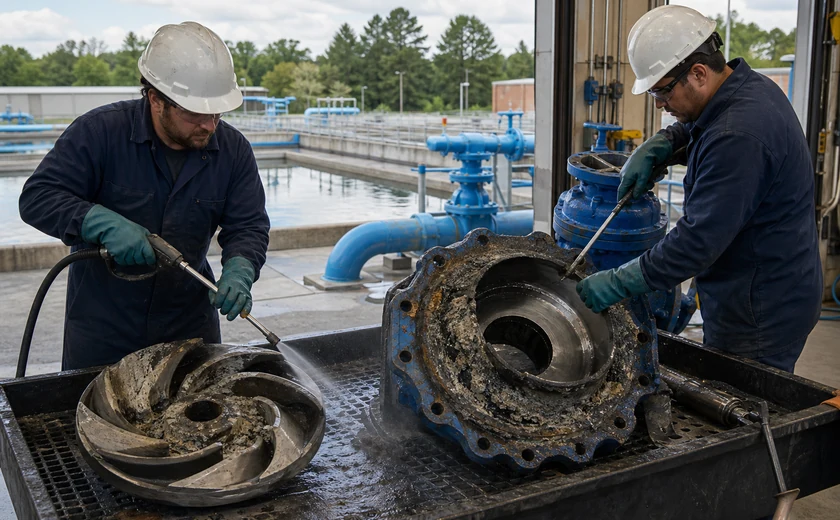

Bid-ready water and facilities chemistry with the safety file already started.
NSF-60 requirements, worker safety, bids, and public water review need a replacement story that survives documentation review.
Why VertKleen fits Municipalities & Water Utilities.
Municipalities and water utilities need chemistry that fits bid language, worker safety expectations, and water-system documentation. CR2, WaterSafe60, and HCR give the buyer a public-sector path for NSF-60 requirements, scale and corrosion control, and acid-replacement work.
Review field evidence
What Municipalities & Water Utilities buyers need documented first.
Public water and municipal facilities need worker-safety improvements that still respect NSF-60, bid language, and documentation review.
Bundle: CR2 for NSF-60 caustic replacement conversations, WaterSafe60 for scale and corrosion control, HCR for acid-cleaning and passivation work.
VertKleen products for Municipalities & Water Utilities.
VertKleen options for Municipalities & Water Utilities workflows.
Put the current chemical on the table.
Send the current product, surface, soil, volume, and buying deadline. We'll come back with the replacement, the proof, a sample, or a distributor — whatever you need next.